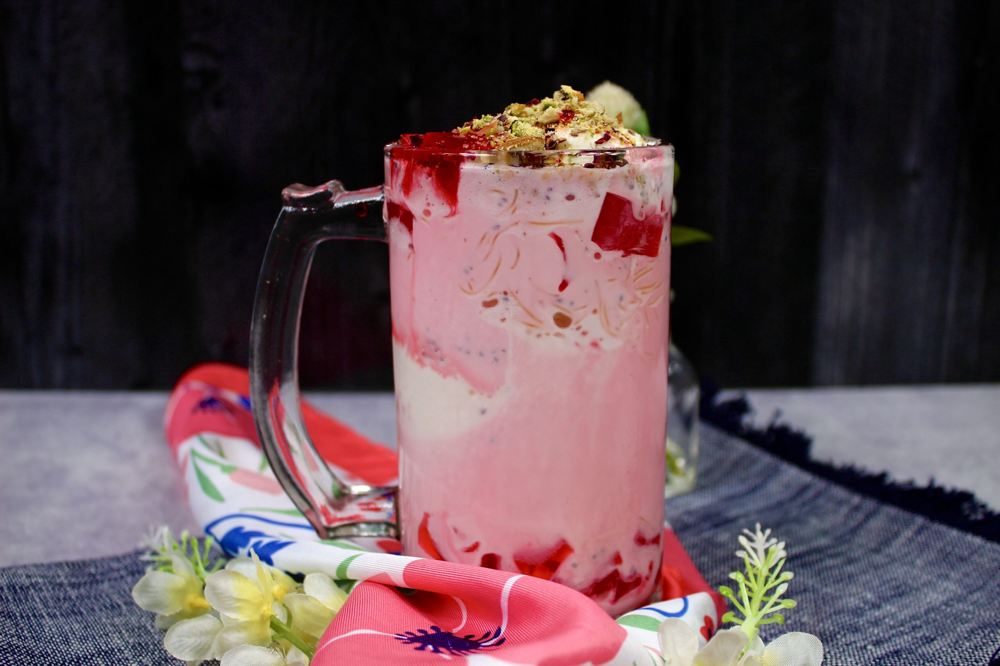

Falooda

Cold dessert made with ice cream and noodles
Falooda is a popular cuisine in Pakistan. Tradionally it is made with mixing ice crea, vermicalli, basil seeds and milk
Ingredients:
- Milk
- Ice cream
- Basil seeds
- vermicalli
- Rooh Afza
Steps:
- Boil the milk
- Mix Lazziza falooda
- Cook it for few minutes
- Garnish with pistachio and jelly
- Put in the fridge
- Serve it cold after adding ice cream